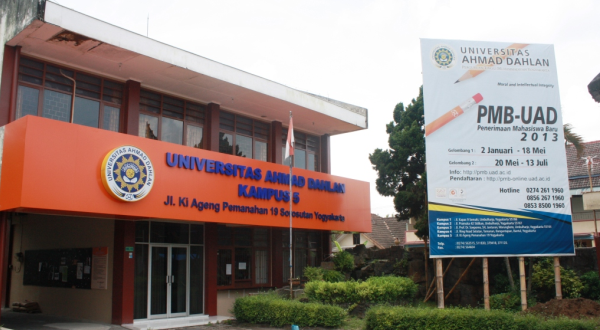

Kampus UAD
Universitas Ahmad Dahlan memiliki 5 kampus yang tersebar diseluruh Yogyakarta
KAMPUS 1
KAMPUS 2
KAMPUS 3

KAMPUS 4

Universitas Ahmad Dahlan adalah salah satu perguruan tinggi yang berada di Yogyakarta.UAD merupakan perguruan tinggi Muhammadiyah terbaik di seluruh Indonesia
Visit Us To Know More“To become an internationally renowned university that is integrated with Islamic values“
Universitas Ahmad Dahlan memiliki 5 kampus yang tersebar diseluruh Yogyakarta
Bahasa dan Sastra Arab
Ilmu Hadis
Pendidikan Agama Islam
Perbankan Syariah
Manajemen
Ekonomi Pembangunan
Akutansi
Bisnis Jasa Makanan
Hukum
Psikologi
Sastra Inggris
Sastra Indonesia
Ilmu Komunikasi
Bimbingan Konseling
Pend. Bahasa Indonesia
Pend. Bahasa Inggris
Pend. Matematika
Pend. Fisika
Pend. Biologi
Pend. PKN
Pend. Guru PAUD
Pend. Guru SD
Pend.Vokasional Teknik Elektronika
Pend.Vokasional Teknologi Otomatif
Informatika
Teknik Industri
Teknik Elektro
Teknik Kimia
Teknilogi Pangan
Fisika
Biologi
Matematika
Sistem Informasi

UAD Adakan Sosialisasi Beasiswa Pendidikan Indonesia
UAD Bagikan 2.0000 Paket Sembako untuk Duafa di Sekitar
Benarkah Perempuan Menstruasi Emosional tidak Stabil?
Seminar Nasional Farmasi UAD: Tanaman Obat,Kemandirian Obat dan Industri Halal
Kampus 1 (Head Office) Jl. Kapas 9, Semaki, Umbulharjo, Yogyakarta 55166 Telepon : (0274) 563515, 511830, 379418, 371120 Faximille : 0274-564604 Email : info[at]uad.ac.id